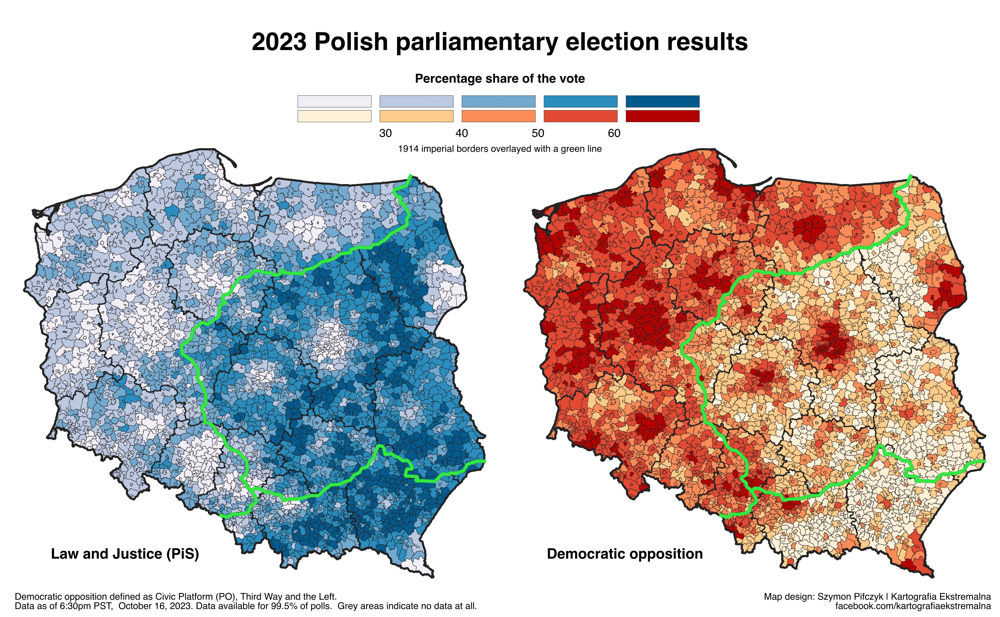
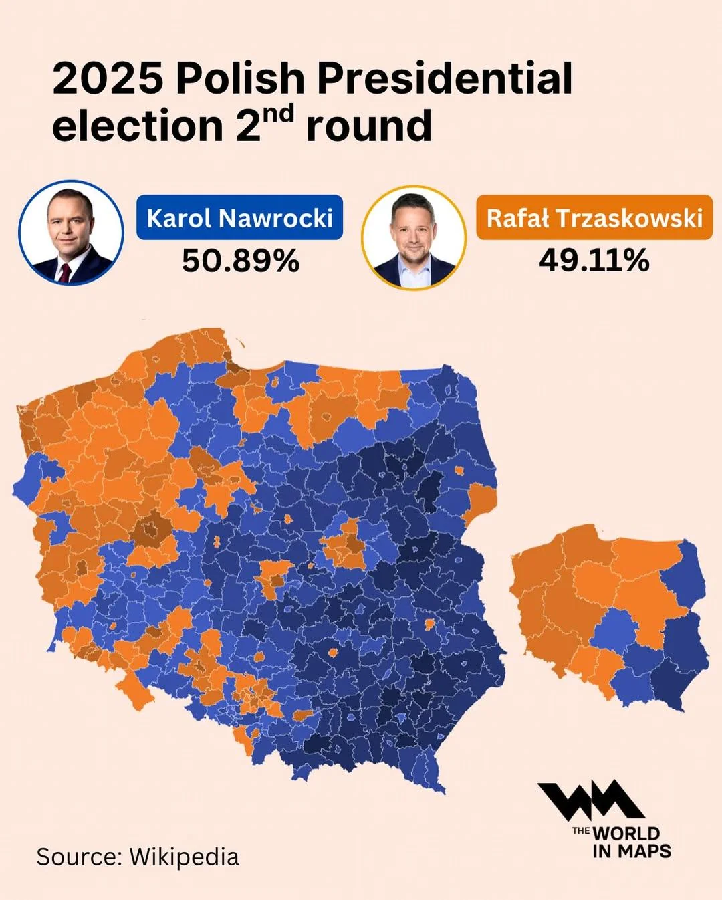
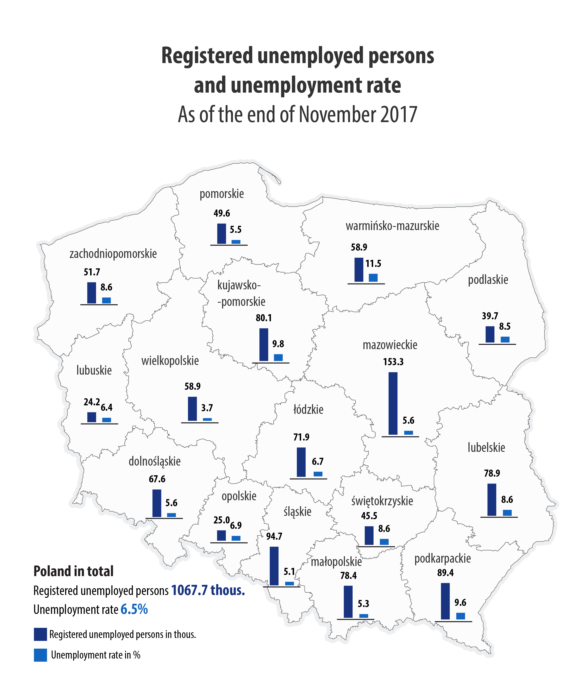

#Import libraries
import pandas as pd
import matplotlib.pyplot as plt
import matplotlib.patches as mpatches
import networkx as nx
import pandas as pd
import numpy as np
import geopandas as gpd
import contextily as ctx
from mpl_toolkits.axes_grid1.inset_locator import inset_axes
import community as community_louvain
import random
import plotly.graph_objects as go
from pyvis.network import Network
import re
import matplotlib.cm as cm
file_path = r'data\ZA8825_v1-0-0.dta' #change here once we know how to present the notebook, or change here for a different path
df = pd.read_stata(file_path)
#Print country codes
print(df['anc_cou'].unique())
#Make a list of countries
country_dfs = {}
for country in df['anc_cou'].unique():
country_dfs[country] = df[df['anc_cou'] == country]SOCI 415 Network Analysis - KINMATRIX Dataset
Python
network analysis
Using the KINMATRIX Dataset to explore network analysis for SOCI 415
Prerequisites
SOCI 415 Network Anlysis Notebook (Basically the COMET one up to section 4.0)
KINMATRIX DATA DESCRIPTION
The KINMATRIX dataset represents families as ego-centric networks of younger adults aged 25 to 35, collecting extensive data about both nuclear and extended kin across ten countries. The data include over 12,000 anchor respondents and more than 252,000 anchor-kin dyads, encompassing a wide range of relatives such as parents, siblings, grandparents, aunts, uncles, cousins, and complex kin (e.g., step- and half-relatives).
Anchor respondents refer to the ones directly sampled from. These anchors filled out the survey about their families and kin meaning that they will always be at the center of these family networks.
The countries in the dataset are the Uk, Germany, Poland, Italy, Sweeden, Denmark, Finalnd, Norway, the Netherlands and the USA.
Part 1. Broader Patterns Across Countries
We will begin by looking at broader patterns across different countries. First we import all the necessary Python libraries for data manipulation, network analysis, and visualization. This will allow us to get results for each country.
Import libraries and the data
1.1 Make it a Network
Here, we systematically construct a kinship network for each country in the dataset using the NetworkX python package. For each country, we filter the data, create a new graph, and add nodes representing anchor individuals and their kin. Then we draw edges between the nodes. Finally, we print out the number of nodes and edges for each country’s network, providing a quick overview of network size and complexity across the dataset.
#Set up a dictionary of countries
country_map = {
'UK': '1. UK',
'Germany': '2. Germany',
'Poland': '3. Poland',
'Italy': '4. Italy',
'Sweden': '5. Sweden',
'Denmark': '6. Denmark',
'Finland': '7. Finland',
'Norway': '8. Norway',
'Netherlands': '9. Netherlands',
'USA': '10. USA'
}
graphs = {}
for country, anc_cou_value in country_map.items():
filtered_df = df[df['anc_cou'] == anc_cou_value]
G_filtered = nx.Graph()
# Add anchor nodes
for idx, row in filtered_df.iterrows():
G_filtered.add_node(row['anc_id'],
country=row['anc_cou'],
age=row['anc_age'],
gender=row['anc_gnd'])
# Add kin nodes and edges
for idx, row in filtered_df.iterrows():
kin_node = f"{row['anc_id']}_{row.get('kin_nam', 'unknown')}_{idx}"
G_filtered.add_node(kin_node, relation=row.get('kin_rel1', None))
G_filtered.add_edge(row['anc_id'], kin_node, relation=row.get('kin_rel1', None))
# Store the graph and anchor nodes
anchor_nodes = list(filtered_df['anc_id'].unique())
graphs[country] = {
'graph': G_filtered,
'anchor_nodes': anchor_nodes
}
print(f"{country}:")
print(f" Number of nodes: {G_filtered.number_of_nodes()}")
print(f" Number of edges: {G_filtered.number_of_edges()}")
print()1.2 Finding summary statistics across the countries
This block computes and displays key network statistics for each country’s kinship network. We calculate the network density (how interconnected the network is), the mean degree (average number of connections per node), and the gender distribution among anchor nodes.
for country, data in graphs.items():
G = data['graph']
anchor_nodes = data['anchor_nodes']
# Density
density = nx.density(G)
# Mean degree
degrees = [deg for node, deg in G.degree()]
mean_degree = np.mean(degrees)
# Gender distribution
female_count = sum(1 for n in anchor_nodes if G.nodes[n].get('gender') == '2. Female')
male_count = sum(1 for n in anchor_nodes if G.nodes[n].get('gender') == '1. Male')
other_count = sum(1 for n in anchor_nodes if G.nodes[n].get('gender') == '3. Other gender or no gender')
# Degree centrality (mean and top 5)
deg_centrality = nx.degree_centrality(G)
mean_deg_centrality = np.mean(list(deg_centrality.values()))
top5_deg_centrality = sorted(deg_centrality.items(), key=lambda x: x[1], reverse=True)[:5]
#Show our findings
print(f"{country}:")
print(f" Density: {density:.4f}")
print(f" Mean degree: {mean_degree:.2f}")
print(f" Female nodes: {female_count}")
print(f" Male nodes: {male_count}")
print(f" Other/No gender nodes: {other_count}")
print(f" Mean degree centrality: {mean_deg_centrality:.4f}")
print(f" Top 5 degree centrality nodes: {top5_deg_centrality}")
print()1.3 Pyvis Visualization for Norway (2500 nodes).
Here we have enough information to do a visualization of our findings. We will use the Pyvis package. The code loads the NetworkX graph into Pyvis, cleans any missing attribute values, and provides interactive controls for exploring the network.
Note (not for final version) Issues: I have also tried for Poland (35,000 nodes) - Very Laggy, but can be ran will need more guidance here as to how to go along with this in the class enviorment. - Tried using an external tool like Gephi, but did not really help. Just too laggy to display properly. - Seems that we need to use a small network of ~2000 nodes otherwise the display does not work properly
Much easier for a smaller one like Norway. My PC is also significantly better than most school laptops so we will need some kind of solution for displaying these visualizations.
Test for Labels - Working
# Retrieve the Norway Network
G_Norway = graphs['Norway']['graph']
anchor_nodes_norway = graphs['Norway']['anchor_nodes']
# Clean None attributes
for n, attrs in G_Norway.nodes(data=True):
for k, v in attrs.items():
if v is None:
G_Norway.nodes[n][k] = "NA"
for u, v, attrs in G_Norway.edges(data=True):
for k, val in attrs.items():
if val is None:
G_Norway.edges[u, v][k] = "NA"
# Create a new Pyvis Network
net = Network(height='800px', width='100%', notebook=True)
# Create simple anchor mapping
anchor_to_label = {}
for i, anchor in enumerate(anchor_nodes_norway, 1):
anchor_to_label[anchor] = f"Anchor-{i}"
# Add nodes manually
for node in G_Norway.nodes():
if node in anchor_nodes_norway:
# Anchor nodes with labels
net.add_node(node, label=anchor_to_label[node], color='#4ECDC4', size=15)
else:
# Kin nodes
net.add_node(node, color='#4ECDC4', size=8)
# Add edges manually
for u, v in G_Norway.edges():
net.add_edge(u, v)
for node in net.nodes:
if node['id'] not in anchor_nodes_norway:
node['label'] = ''
# Minimal settings
net.show('norway_updated_network.html')
print("All blue nodes version saved as 'norway_all_blue_nodes.html'")
print(f"Total nodes: {G_Norway.number_of_nodes()}")
print(f"Total edges: {G_Norway.number_of_edges()}")
print(f"Anchor nodes labeled: {len(anchor_nodes_norway)}")2. Across countries Density by Age and Gender
This code block constructs kinship network graphs for each country in the KINMATRIX dataset and then analyzes how the density of family networks varies by age and gender within each country. This analysis helps reveal patterns and differences in family network structure across demographic groups and between countries, providing insight into how kinship connectivity varies by age and gender in different countries.
graphs = {}
for country, anc_cou_value in country_map.items():
filtered_df = df[df['anc_cou'] == anc_cou_value]
G_filtered = nx.Graph()
# Add anchor nodes
for idx, row in filtered_df.iterrows():
G_filtered.add_node(row['anc_id'],
country=row['anc_cou'],
age=row['anc_age'],
gender=row['anc_gnd'])
# Add kin nodes and edges
for idx, row in filtered_df.iterrows():
kin_node = f"{row['anc_id']}_{row.get('kin_nam', 'unknown')}_{idx}"
G_filtered.add_node(kin_node, relation=row.get('kin_rel1', None))
G_filtered.add_edge(row['anc_id'], kin_node, relation=row.get('kin_rel1', None))
# Store only the graph
graphs[country] = G_filtered
def analyze_family_density_by_demographics(G_filtered):
density_by_age = {}
density_by_gender = {}
for anchor_id in [n for n in G_filtered.nodes() if 'anc_' in str(n) or isinstance(n, (int, float))]:
ego_net = nx.ego_graph(G_filtered, anchor_id)
density = nx.density(ego_net)
age = G_filtered.nodes[anchor_id].get('age')
gender = G_filtered.nodes[anchor_id].get('gender')
if age:
density_by_age.setdefault(age // 10 * 10, []).append(density)
if gender:
density_by_gender.setdefault(gender, []).append(density)
print("Density by Age Group:")
for age_group, densities in sorted(density_by_age.items()):
print(f"Age {age_group}s: Mean Density = {np.mean(densities):.4f}, Count = {len(densities)}")
print("\nDensity by Gender:")
for gender, densities in density_by_gender.items():
print(f"Gender {gender}: Mean Density = {np.mean(densities):.4f}, Count = {len(densities)}")
# Loop through all countries
for country in country_map:
if country in graphs:
print(f"\n--- {country} ---")
analyze_family_density_by_demographics(graphs[country])
else:
print(f"No graph available for {country}")2.1 Finding a Pattern
Interactive part: Have a look at our findings from sections 1 and 2, based on frameworks taught in class explain a reason for them.
Some example findings are listed below, but look for your own and try to link it to a concept from class.
- In all countries, individuals in their 30s higher mean density than those in their 20s (Germany: 20s = 0.1355, 30s = 0.1468, USA: 20s = 0.1058, 30s = 0.1065)
- Men tend to have a higher mean density than women (Poland: Male = 0.1343, Female = 0.1130)
- The USA has the lowest overall density but has the largest sample size? What are the reasons behind this, immigration and disconection from family, or maybe a smaller cultural focus on family?
Frameworks (from syllabus 2019 can change here): - Social Exchange framework - Symbolic Interaction framework - Life Course Developmental framework - Family Stress Theory - Systems framework - Conflict and Critical Theories framework - Feminist framework - Ecological framework - Future of family theory
3.0 Colored Family Networks
For the next part of the notebook I have decided to focus on the Pomeranian (Pomorskie in Polish) Voivodeship It is in north-western Poland with the largest city being Gdańsk.  It has a population of 2.24 million as of 2019.
It has a population of 2.24 million as of 2019.
Note: This is mostly for computational and display reasons so far as the network is much smaller than a full country.
The code below will filter our data for Poland and the Pomorskie region to have a smaller subset.
filtered_df = df[(df['anc_cou'] == '3. Poland') & (df['anc_regpl'] == '11. Pomorskie')] #Filter anc_cou to be Poland and anc_regpl to be Pomorskie
#print(filtered_df.head())
print(f"Number of rows after filtering: {len(filtered_df)}")3.1 Make it a NetworkX Network
The code below makes a new NetworkX relationship with anchors (highest level of a family ancestor) and their kin. The output will be the total number of nodes and edges in the Network.
G_filtered = nx.Graph()
# Add anchor nodes for filtered data
for idx, row in filtered_df.iterrows():
G_filtered.add_node(row['anc_id'],
country=row['anc_cou'],
age=row['anc_age'],
gender=row['anc_gnd'])
# Add kin nodes and edges
for idx, row in filtered_df.iterrows():
kin_node = f"{row['anc_id']}_{row.get('kin_nam', 'unknown')}_{idx}"
G_filtered.add_node(kin_node, relation=row.get('kin_rel1', None))
G_filtered.add_edge(row['anc_id'], kin_node, relation=row.get('kin_rel1', None))
# Define anchor_nodes
anchor_nodes = list(filtered_df['anc_id'].unique())
print(f"Number of nodes: {G_filtered.number_of_nodes()}")
print(f"Number of edges: {G_filtered.number_of_edges()}")3.2 Colored Visualization
We will make a Pyvis visualization with coloring for family structures.
Label test for Family Relations - WORKS
# Define color map for main relationship types
relationship_colors = {
'father': 'blue',
'mother': 'pink',
'brother': 'green',
'sister': 'purple',
'aunt': 'orange',
'uncle': 'brown',
'cousin': 'teal',
'grandfather': 'navy',
'grandmother': 'magenta',
'son': 'red',
'daughter': 'yellow',
'nephew': 'lightgreen',
'niece': 'lightpink',
'stepfather': 'slateblue',
'stepmother': 'plum',
'other': 'gray',
}
def extract_relation(rel_str):
"""Extracts the main relationship keyword from the string."""
if not isinstance(rel_str, str):
return 'other'
rel_str = rel_str.lower()
# Fixed regex pattern with raw string
rel_str = re.sub(r'^\d+\.\s*', '', rel_str)
for key in relationship_colors.keys():
if key in rel_str:
return key
return 'other'
# Create a new Pyvis Network
net = Network(height='800px', width='100%', notebook=True, bgcolor='#ffffff', font_color='black')
# Create anchor mapping for cleaner labels
anchor_to_label = {}
anchor_nodes = list(filtered_df['anc_id'].unique())
for i, anchor in enumerate(anchor_nodes, 1):
anchor_to_label[anchor] = f"Anchor-{i}"
# Add anchor nodes (individuals) with clean labels
for idx, row in filtered_df.iterrows():
net.add_node(row['anc_id'],
label=anchor_to_label[row['anc_id']], # Clean "Anchor-X" label
color='lightblue',
size=15, # Larger size for anchor nodes
title=f"Age: {row['anc_age']}<br>Gender: {row['anc_gnd']}")
# Add kin nodes and edges with relationship-based coloring
for idx, row in filtered_df.iterrows():
relation_raw = row.get('kin_typ', None)
relation = extract_relation(relation_raw)
color = relationship_colors.get(relation, 'gray')
kin_node = f"{row['anc_id']}_{row.get('kin_nam', 'unknown')}_{idx}"
# Add kin node with temporary label (will be removed later)
net.add_node(kin_node,
label=str(row.get('kin_nam', 'unknown')), # Temporary label
color=color,
size=8, # Smaller size for kin nodes
title=f"Relation: {relation_raw}") # Hover info stays
net.add_edge(row['anc_id'], kin_node, title=relation_raw)
for node in net.nodes:
if node['id'] not in anchor_nodes:
node['label'] = '' # Empty label for kin nodes - no labels when zoomed in
net.show_buttons()
net.show('family_structure_network.html')
#print(f"Network created with:")
#print(f"- Total nodes: {len(net.nodes)}")
#print(f"- Total edges: {len(net.edges)}")
#print(f"- Anchor nodes labeled: {len(anchor_nodes)}")
#print(f"- Kin nodes: {len(net.nodes) - len(anchor_nodes)} (no labels when zoomed in)")
patches = [mpatches.Patch(color=color, label=relation) for relation, color in relationship_colors.items()]
# Plot the legend of family relations
fig, ax = plt.subplots(figsize=(6, 4))
ax.legend(handles=patches, loc='center', frameon=False, fontsize=10)
ax.axis('off')
plt.show()3.3 In class discussion from the family structures visualization
Students will look at the visualization on their browser and in small groups of 3-4 will discuss how the findings from this dataset can be linked to theories in studied frameworks from the course. After about 10 minuites of discussion groups will state their most interesting or best interpretation that they found, some possible examples are listed below for the Social Exchange Framework, the Feminist Framework and Conflict Theory.
Social Exchange Framework Family ties exist as a exchange of resources so each edge between the nodes means there is some form of exchange, this could range from such as support, care, or obligation. The color-coding of relationships (e.g., blue for father, pink for mother) visually distinguishes different types of exchanges, allowing analysis of who is connected to whom and what kinds of resources or support might flow along those ties. For example, a node with many blue (father) and pink (mother) connections might receive more parental support, while green (brother) or purple (sister) ties could represent sibling exchanges.
Feminist Framework
The feminist framework examines gender roles, power imbalances, and the ways traditional family structures reinforce gender inequality. For example we can link the centrality or marginalization of female roles (e.g., mothers, daughters, sisters) compared to male roles (fathers, sons, brothers) to patriarchical structures of modern western society.
Conflict Theory
Conflict theory references the family as a unit by and through which power is negotiated. This occurs within family structures, where power is concentrated within the parental unit and children are typically subordinate. Power is also exercised in determining the structure of families themselves, and the access an individual is given to certain things like education, inheritance, and wealth.
By thinking about familial networks from a conflict theoretical standpoint, questions around power arise. Some of these questions might inquire into the relative power of different families, or into the relative power of members within families. Perhaps in a given geographic area, where many families are similarly positioned, power has less to do with economic standing and is more related to social trust.
While you look through the family structures visualization, consider how conflict theory and power might be influencing the results.
Note: Some of these can be removed in the final part
4.0 Visualization of Gender
Below the code will make an interactive Pyvis visualization with dots colored for gender. This can be used to discuss gender compositions of families and feminist theory. We can see if our network supports the theory of power imbalances and reflect the ways traditional family structures reinforce gender inequality.
Labels Test
# Comprehensive relationship-to-gender mapping
GENDER_FROM_RELATIONSHIP = {
# Male relationships
'father': 'male', 'dad': 'male', 'daddy': 'male', 'papa': 'male',
'son': 'male', 'brother': 'male', 'grandfather': 'male', 'grandpa': 'male',
'uncle': 'male', 'nephew': 'male', 'husband': 'male', 'boyfriend': 'male',
'stepfather': 'male', 'stepson': 'male', 'stepbrother': 'male',
'father-in-law': 'male', 'son-in-law': 'male', 'brother-in-law': 'male',
'godfather': 'male', 'godson': 'male',
# Female relationships
'mother': 'female', 'mom': 'female', 'mommy': 'female', 'mama': 'female',
'daughter': 'female', 'sister': 'female', 'grandmother': 'female', 'grandma': 'female',
'aunt': 'female', 'niece': 'female', 'wife': 'female', 'girlfriend': 'female',
'stepmother': 'female', 'stepdaughter': 'female', 'stepsister': 'female',
'mother-in-law': 'female', 'daughter-in-law': 'female', 'sister-in-law': 'female',
'godmother': 'female', 'goddaughter': 'female'
}
def get_node_gender_and_color(row, is_anchor=True):
"""
Determine gender and color for any node (anchor or kin)
Returns: (gender_string, color_string)
"""
# Gender color mapping
colors = {'male': 'blue', 'female': 'pink', 'unknown': 'lightgray'}
if is_anchor:
# For anchor nodes - check the gender field more thoroughly
gender_field = str(row.get('anc_gnd', '')).lower().strip()
# Handle various gender field formats
if gender_field in ['m', 'male', 'man', '1. male', '1.male', 'male.', '1']:
return 'male', colors['male']
elif gender_field in ['f', 'female', 'woman', '2. female', '2.female', 'female.', '2']:
return 'female', colors['female']
elif 'male' in gender_field and 'female' not in gender_field:
return 'male', colors['male']
elif 'female' in gender_field:
return 'female', colors['female']
else:
# For kin nodes
gender_field = str(row.get('kin_gnd', '')).lower().strip()
# Handle various gender field formats for kin nodes too
if gender_field in ['m', 'male', 'man', '1. male', '1.male', 'male.', '1']:
return 'male', colors['male']
elif gender_field in ['f', 'female', 'woman', '2. female', '2.female', 'female.', '2']:
return 'female', colors['female']
elif 'male' in gender_field and 'female' not in gender_field:
return 'male', colors['male']
elif 'female' in gender_field:
return 'female', colors['female']
# Get gender from relationship if direct gender field doesn't work
relationship = str(row.get('kin_typ', '')).lower().strip()
# Clean the relationship string
relationship = re.sub(r'^(my|the|a|an)\s+', '', relationship)
# Check for relationship matches
for rel_key, gender in GENDER_FROM_RELATIONSHIP.items():
if rel_key in relationship or relationship in rel_key:
return gender, colors[gender]
return 'unknown', colors['unknown']
# Initialize your network
net = Network(height="600px", width="100%", bgcolor="#ffffff", font_color="black", notebook=True)
# Create anchor mapping for cleaner labels
anchor_to_label = {}
anchor_nodes = list(filtered_df['anc_id'].unique())
for i, anchor in enumerate(anchor_nodes, 1):
anchor_to_label[anchor] = f"Anchor-{i}"
# Add anchor nodes with gender-based coloring and only gender in hover
print("Adding anchor nodes with gender colors...")
for idx, row in filtered_df.iterrows():
gender, color = get_node_gender_and_color(row, is_anchor=True)
net.add_node(row['anc_id'],
label=anchor_to_label[row['anc_id']], # Clean "Anchor-X" label
color=color,
size=15, # Larger size for anchor nodes
title=f"Gender: {gender}") # Only gender in hover
# Add kin nodes and edges with gender-based coloring
print("Adding kin nodes with gender colors...")
for idx, row in filtered_df.iterrows():
gender, color = get_node_gender_and_color(row, is_anchor=False)
kin_node = f"{row['anc_id']}_{row.get('kin_nam', 'unknown')}_{idx}"
net.add_node(kin_node,
label='', # No label for kin nodes
color=color,
size=8, # Smaller size for kin nodes
title=f"Gender: {gender}") # Only gender in hover
# Add edge between anchor and kin (no title/hover info on edges)
net.add_edge(row['anc_id'], kin_node)
# Remove labels from kin nodes (keep only anchor node labels)
for node in net.nodes:
if node['id'] not in anchor_nodes:
node['label'] = '' # Empty label for kin nodes
# Configure and display network
net.show_buttons(filter_=['physics'])
net.show('gender_only_kinship_network_fixed.html')
print("Network created successfully with gender-only hover info!")
# Print summary of node colors
node_colors = {}
for node in net.nodes:
color = node['color']
node_colors[color] = node_colors.get(color, 0) + 1
print("\nNode color summary:")
color_to_gender = {'blue': 'Male', 'pink': 'Female', 'lightgray': 'Unknown'}
for color, count in node_colors.items():
gender_name = color_to_gender.get(color, color)
print(f" {gender_name}: {count} nodes")
print(f"\nNetwork summary:")
print(f"- Total nodes: {len(net.nodes)}")
print(f"- Total edges: {len(net.edges)}")
print(f"- Anchor nodes labeled: {len(anchor_nodes)}")
print(f"- Kin nodes: {len(net.nodes) - len(anchor_nodes)} (no labels)")5.0 Health and Education Across Countries
Our goal for this section is to look at Health and Education across the ten countries in the dataset. These metrics are based on surveys of anchor individuals so take the country findings with a grain of salt. These are subjective measures which can change from country to country and the sample size is quite small, the goal is to look if there are differences between countries which we can infer from the data that causes these differences in health and education.
The Code block below will look through all countries and find most and least educated and most and least healthy.
# Country mapping dictionary
country_map = {
'UK': '1. UK',
'Germany': '2. Germany',
'Poland': '3. Poland',
'Italy': '4. Italy',
'Sweden': '5. Sweden',
'Denmark': '6. Denmark',
'Finland': '7. Finland',
'Norway': '8. Norway',
'Netherlands': '9. Netherlands',
'USA': '10. USA'
}
# Initialize results storage
health_results = {}
education_results = {}
# Calculate percentages for each country
for country, code in country_map.items():
country_df = df[df['anc_cou'] == code]
# Health calculation
health_counts = country_df['anc_hea'].value_counts(dropna=True)
very_good = health_counts.get('1. Very good', 0)
good = health_counts.get('2. Good', 0)
total_health = health_counts.sum()
health_pct = (very_good + good) / total_health if total_health > 0 else 0
health_results[country] = health_pct
# Education calculation
edu_counts = country_df['anc_eduall'].value_counts(dropna=True)
high_edu = edu_counts.get('3. High', 0)
# Exclude 'Prefer not to answer' from total
valid_responses = edu_counts.drop('-2. Prefer not to answer', errors='ignore').sum()
edu_pct = high_edu / valid_responses if valid_responses > 0 else 0
education_results[country] = edu_pct
# Sort results from most to least
sorted_health_desc = sorted(health_results.items(), key=lambda x: x[1], reverse=True)
sorted_education_desc = sorted(education_results.items(), key=lambda x: x[1], reverse=True)
# Prepare output strings
health_output = "Countries sorted by health (most to least healthy):\n"
edu_output = "Countries sorted by education (most to least educated):\n"
for country, pct in sorted_health_desc:
health_output += f"{country}: {pct:.2%}\n"
for country, pct in sorted_education_desc:
edu_output += f"{country}: {pct:.2%}\n"
print(health_output)
print(edu_output)5.1 Health (Italy vs Denmark)
Summary stats block for Italy and Denmark we can take findings from here.
def calculate_network_stats(G):
stats = {}
stats['number_of_nodes'] = G.number_of_nodes()
stats['number_of_edges'] = G.number_of_edges()
stats['density'] = nx.density(G)
stats['average_degree_centrality'] = np.mean(list(nx.degree_centrality(G).values()))
stats['average_closeness_centrality'] = np.mean(list(nx.closeness_centrality(G).values()))
stats['number_of_connected_components'] = nx.number_connected_components(G)
stats['average_clustering_coefficient'] = nx.average_clustering(G)
return stats
italy_stats = calculate_network_stats(graphs['Italy'])
denmark_stats = calculate_network_stats(graphs['Denmark'])
print("Italy Network Stats:")
for k, v in italy_stats.items():
print(f" {k}: {v}")
print("\nDenmark Network Stats:")
for k, v in denmark_stats.items():
print(f" {k}: {v}")5.2 Education USA vs Germany
Finding summary statistics for USA and Germany.
# Method 1: If graphs stores NetworkX objects directly
usa_stats = calculate_network_stats(graphs['USA'])
germany_stats = calculate_network_stats(graphs['Germany'])
# Method 2: If graphs stores dictionaries with 'graph' key
# usa_stats = calculate_network_stats(graphs['USA']['graph'])
# germany_stats = calculate_network_stats(graphs['Germany']['graph'])
print("USA Network Stats:")
for k, v in usa_stats.items():
print(f" {k}: {v}")
print("\nGermany Network Stats:")
for k, v in germany_stats.items():
print(f" {k}: {v}")6.0 Family size vs Politics in USA and Poland
You might have heard in politics and online that right-wing politics is family oriented and conservatives have larger families with more children? This is a common claim but is there empirical evidence to back it up?
In the United States research states that claim that right-leaning individuals tend to have larger families and more children than their left-leaning counterparts, with evidence spanning multiple decades and geographic regions. Republican leaning high-school seniors from 1989-2019 desired more children than their Democrat leaning peers.
As for actual statistics of childbirth between Republican and Democrat states. Analysis of U.S. birth rates reveals that 100 conservative adults raise 208 children on average, compared to 147 for democrats this is a 41% gap which is very significant. Post-2016, Republican-majority counties saw 7,000 more births than expected, while Democratic counties had 38,000 fewer.
There is substantial evidence to conclude that Republican states should have larger families with more children than their Democrat counterparts, but does this track in the KINMATRIX data.
6.1 Republican and Democrat States
The way in which KINMATRIX categories US states is in regions. The regions are New England, South Atlantic, Mid-Atlantic, East South Central, East North Central, Pacific, West South Central, Mountain, and West North Central. Based on these regions and the Cook Partisan Voting Index (PVI)
The Democrat regions are: New England (CT, MA, ME, NH, RI, VT)‘, Pacific (AK, CA, HI, OR, WA)’, Mid-Atlantic (NJ, NY, DE, PA)‘, East North Central (IL, IN, MI, OH, WI)’
The Republican Regions are: East South Central (AL, KY, MS, TN)‘, West South Central (AR, LA, OK, TX)’, West North Central (IA, KS, MN, MO, NE, ND, SD)‘, Mountain (AZ, CO, ID, MT, NV, NM, UT, WY)’, South Atlantic (FL, GA, MD, NC, SC, VA, WV, DC)’
The output of this code block will be the average size of families in these regions.
# Extract US data from country_dfs and make a proper copy
us_data = country_dfs['10. USA'].copy()
# Map region names to political lean
democrat_regions = [
'5. New England (CT, MA, ME, NH, RI, VT)',
'6. Pacific (AK, CA, HI, OR, WA)',
'3. Mid-Atlantic (NJ, NY, DE, PA)',
'1. East North Central (IL, IN, MI, OH, WI)'
]
republican_regions = [
'2. East South Central (AL, KY, MS, TN)',
'9. West South Central (AR, LA, OK, TX)',
'8. West North Central (IA, KS, MN, MO, NE, ND, SD)',
'4. Mountain (AZ, CO, ID, MT, NV, NM, UT, WY)',
'7. South Atlantic (FL, GA, MD, NC, SC, VA, WV, DC)'
]
# Define color map for main relationship types
relationship_colors = {
'father': 'blue',
'mother': 'pink',
'brother': 'green',
'sister': 'purple',
'aunt': 'orange',
'uncle': 'brown',
'cousin': 'teal',
'grandfather': 'navy',
'grandmother': 'magenta',
'son': 'red',
'daughter': 'yellow',
'nephew': 'lightgreen',
'niece': 'lightpink',
'stepfather': 'slateblue',
'stepmother': 'plum',
'other': 'gray',
}
# Assign group based on region
def assign_state_group(region):
if region in democrat_regions:
return 'Democrat'
elif region in republican_regions:
return 'Republican'
else:
return 'Other'
# Define relationship extraction function
def extract_relation(rel_str):
if not isinstance(rel_str, str):
return 'other'
rel_str = rel_str.lower()
rel_str = re.sub(r'^\d+\.\s*', '', rel_str)
for key in relationship_colors.keys():
if key in rel_str:
return key
return 'other'
# Apply transformations
us_data['state_group'] = us_data['anc_regus'].apply(assign_state_group)
us_data['relation'] = us_data['kin_typ'].apply(extract_relation)
def calculate_metrics(group_data):
kin_counts = group_data.groupby('anc_id').size()
avg_kin = kin_counts.mean() if not kin_counts.empty else 0
# Use the normalized relation column instead of string matching on kin_typ
children = group_data[group_data['relation'].isin(['son', 'daughter'])]
children_count = children.groupby('anc_id').size()
avg_children = children_count.mean() if not children_count.empty else 0
cluster_sizes = kin_counts + 1 # Anchor + kin count
avg_cluster_size = cluster_sizes.mean() if not cluster_sizes.empty else 0
return avg_kin, avg_children, avg_cluster_size
# Calculate results
results = {}
for group in ['Republican', 'Democrat']:
group_data = us_data[us_data['state_group'] == group]
avg_kin, avg_children, avg_cluster_size = calculate_metrics(group_data)
results[group] = {
'avg_kin_per_anchor': avg_kin,
'avg_children_per_anchor': avg_children,
'avg_cluster_size': avg_cluster_size
}
# Overall in the US
avg_kin, avg_children, avg_cluster_size = calculate_metrics(us_data)
results['Overall US'] = {
'avg_kin_per_anchor': avg_kin,
'avg_children_per_anchor': avg_children,
'avg_cluster_size': avg_cluster_size
}
# print results
for group, metrics in results.items():
print(f"{group} Regions:")
print(f" Avg kin per anchor: {metrics['avg_kin_per_anchor']:.2f}")The main findings are consistent with the theory discussed above. From the KINMATRIX data of the 118,702 Nodes in the United States. Republican regions on average have larger families of 23.91 versus 22.33 in Democrat regions. Over all of these observations this is a significant difference.
6.2 Politics for Poland
The administrative Regions for Poland in KINMATRIX is voivodeships. There are 16 voivodeships in Poland and they are the largest administrative regions similar to provinces in Canada. 
Let’s see if this tracks across countries and is not just a phenomenon present in the United States. Poland politically is a similarly divided nation with the more Eastern and Southern regions prefering conservative candidates and the Western and Northern regions prefering more liberal candidates. Below is displayed a . The Polish presidential Election had it’s second round on June 1 2025 and the this is the . This general trend of political allegiance has been around since Poland became independant from the USSR in 1989. Following the analysis in the United States using the Polish election results over the last 20 years the four most left-leaning voivodeships are: Mazowieckie (Warsaw), Pomorskie (Gdansk/Tri-city), Wielkopolskie (Poznan) and Zachodniopomorskie (Szczeczin). The four most right-leaning voivodeships are: Podkarpackie (Rzeszow/Przemysl) Lubelskie (Lublin), Podlaskie (Bialystok), and Świętokrzyskie (Kielce). We will repeat the analysis for the United States with these eight voivodeships.
poland_df = country_dfs['3. Poland'].copy()
# Define left-leaning and right-leaning voivodeships
left_leaning_voivodeships = [
'7. Mazowieckie', # Warsaw
'11. Pomorskie', # Gdansk/Tri-city
'15. Wielkopolskie', # Poznan
'16. Zachodnio-Pomorskie' # Szczeczin
]
right_leaning_voivodeships = [
'9. Podkarpackie', # Rzeszow/Przemysl
'4. Lubelskie', # Lublin
'10. Podlaskie', # Bialystok
'13. Swietokrzyskie' # Kielce
]
# Assign political group
def assign_voivodeship_group(voiv):
if voiv in left_leaning_voivodeships:
return 'Left-leaning'
elif voiv in right_leaning_voivodeships:
return 'Right-leaning'
else:
return 'Other'
poland_df['voivodeship_group'] = poland_df['anc_regpl'].apply(assign_voivodeship_group)
# Relationship normalization
relationship_colors = {
'father': 'blue',
'mother': 'pink',
'brother': 'green',
'sister': 'purple',
'aunt': 'orange',
'uncle': 'brown',
'cousin': 'teal',
'grandfather': 'navy',
'grandmother': 'magenta',
'son': 'red',
'daughter': 'yellow',
'nephew': 'lightgreen',
'niece': 'lightpink',
'stepfather': 'slateblue',
'stepmother': 'plum',
'other': 'gray',
}
def extract_relation_pl(rel_str):
if not isinstance(rel_str, str):
return 'other'
rel_str = rel_str.lower()
rel_str = re.sub(r'^\d+\.\s*', '', rel_str)
for key in relationship_colors.keys():
if key in rel_str:
return key
return 'other'
poland_df['relation'] = poland_df['kin_typ'].apply(extract_relation_pl)
# Metrics calculation
def calculate_metrics_pl(group_data):
kin_counts = group_data.groupby('anc_id').size()
avg_kin = kin_counts.mean() if not kin_counts.empty else 0
children = group_data[group_data['relation'].isin(['son', 'daughter'])]
children_count = children.groupby('anc_id').size()
avg_children = children_count.mean() if not children_count.empty else 0
cluster_sizes = kin_counts + 1 # Anchor + kin count
avg_cluster_size = cluster_sizes.mean() if not cluster_sizes.empty else 0
return avg_kin, avg_children, avg_cluster_size
# Calculate and print results
results_pl = {}
for group in ['Right-leaning', 'Left-leaning']:
group_data = poland_df[poland_df['voivodeship_group'] == group]
avg_kin, avg_children, avg_cluster_size = calculate_metrics_pl(group_data)
results_pl[group] = {
'avg_kin_per_anchor': avg_kin,
'avg_children_per_anchor': avg_children,
'avg_cluster_size': avg_cluster_size
}
# Overall Poland
avg_kin, avg_children, avg_cluster_size = calculate_metrics_pl(poland_df)
results_pl['Overall Poland'] = {
'avg_kin_per_anchor': avg_kin,
'avg_children_per_anchor': avg_children,
'avg_cluster_size': avg_cluster_size
}
# Print results
for group, metrics in results_pl.items():
print(f"{group} Voivodeships:")
print(f" Avg kin per anchor: {metrics['avg_kin_per_anchor']:.2f}")
#print(f" Avg cluster size: {metrics['avg_cluster_size']:.2f}")
print()Main Result:
Right-leaning Voivodeships: Avg kin per anchor: 20.85
Left-leaning Voivodeships: Avg kin per anchor: 18.54
We have found that there is a significant difference between right-leaning and left-leaning region in family size. More conservative regions have larger families by on average 2.31 people. This is even more significant than in the United States.
6.3 Discussion
For the next part of the notebook turn to a person next to you and discuss these findings. Why do these more conservative regions have larger families is is just more “traditional values,” or is there something more? Use the frameworks discussed in class. This will be easier for the United States as people are more familiar with politics and life in the United States. But also try for Poland, this will be more difficult.
7.0 General case for Interesting findings
The KINMATRIX Dataset is not just limited to information about family relations, during the data gathering process researches also asked about socio-economic variables like education, employment, health, sexuality and religion. These can be used in all ten countries, but for the sake of computational simplicity and because I am very familiar with Poland (more than any other country in the dataset) we will use Poland.
Note (not for final): This sort of analysis can be used on all 10 countries in the dataset (UK, Germany, Poland, Italy, Sweeden, Denmark, Finalnd, Norway, the Netherlands and the USA.) This is a sort of example of what else can be done. This can then be contrasted to frameworks from class and used for analysis/discussions.
There are 16 voivodeships in Poland and they are the largest administrative regions similar to provinces in Canada.
The cell below will filter the dataset for Poland and loop through all the voivodeships.
# Filter for Poland
poland_df = df[df['anc_cou'] == '3. Poland']
# Get unique voivodeships
voivodeships = poland_df['anc_regpl'].dropna().unique()
# Loop through all voivodeships
for voiv in voivodeships:
voiv_df = poland_df[poland_df['anc_regpl'] == voiv]
print(f"Voivodeship: {voiv}, Rows: {len(voiv_df)}")From the cell below we will get all of our summary statistics for each voivodeship.
# List of variables
summary_vars = {
'education': 'anc_eduall', # Education (all countries)
'education_poland': 'anc_edupl', # Education (Poland-specific)
'sexual_orientation': 'anc_sor', # Sexual orientation
'gender': 'anc_gnd', # Gender
'income': 'anc_sss', # Subjective social status (income proxy)
'age': 'anc_age', # Age
'region': 'anc_regpl', # Voivodeship (region)
'ethnicity': 'anc_eth', # Ethnicity
'religion1': 'anc_rel1', # Religion (main)
'religion2': 'anc_rel2', # Religion (secondary)
'religion3': 'anc_rel3', # Religion (tertiary)
'employment': 'anc_emp', # Employment status
'health': 'anc_hea', # Health
'parental_separation': 'par_sep' # Parental separation
}
def summarize_voivodeship(voiv_df):
stats = {}
# Network construction
G = nx.Graph()
for idx, row in voiv_df.iterrows():
G.add_node(row['anc_id'], age=row['anc_age'], gender=row['anc_gnd'])
kin_node = f"{row['anc_id']}_{row.get('kin_nam', 'unknown')}_{idx}"
G.add_node(kin_node, relation=row.get('kin_typ', None))
G.add_edge(row['anc_id'], kin_node)
stats['nodes'] = G.number_of_nodes()
stats['edges'] = G.number_of_edges()
stats['density'] = nx.density(G)
degrees = [deg for node, deg in G.degree()]
stats['mean_degree'] = np.mean(degrees) if degrees else 0
# Demographic summaries
for label, var in summary_vars.items():
value_counts = voiv_df[var].value_counts(dropna=False)
stats[label] = value_counts.to_dict()
return stats
# Filter for Poland and get unique voivodeships
poland_df = df[df['anc_cou'] == '3. Poland']
voivodeships = poland_df['anc_regpl'].dropna().unique()
# Loop through voivodeships and print summary
for voiv in voivodeships:
voiv_df = poland_df[poland_df['anc_regpl'] == voiv]
stats = summarize_voivodeship(voiv_df)
print(f"\nVoivodeship: {voiv}")
print(f" Nodes: {stats['nodes']}")
print(f" Edges: {stats['edges']}")
print(f" Density: {stats['density']:.4f}")
print(f" Mean degree: {stats['mean_degree']:.2f}")
print(f" Education (all): {stats['education']}")
print(f" Education (Poland): {stats['education_poland']}")
print(f" Sexual orientation: {stats['sexual_orientation']}")
print(f" Gender: {stats['gender']}")
print(f" Income (subjective social status): {stats['income']}")
print(f" Age: {stats['age']}")
print(f" Region: {stats['region']}")
print(f" Ethnicity: {stats['ethnicity']}")
print(f" Religion 1: {stats['religion1']}")
#print(f" Religion 2: {stats['religion2']}")
#print(f" Religion 3: {stats['religion3']}")
print(f" Employment: {stats['employment']}")
print(f" Health: {stats['health']}")
print(f" Parental separation: {stats['parental_separation']}")From the output of the cell above it is quite overwhelming we can sort from highest to smallest percentage. We will focus specifically on Education, Employment and Health. We will then contrast this information to the Polish Census and discuss why these differences exist very consistently across the voivodeships.
summary_vars = {
'education': 'anc_eduall',
'education_poland': 'anc_edupl',
'sexual_orientation': 'anc_sor',
'gender': 'anc_gnd',
'income': 'anc_sss',
'age': 'anc_age',
'region': 'anc_regpl',
'ethnicity': 'anc_eth',
'religion1': 'anc_rel1',
'religion2': 'anc_rel2',
'religion3': 'anc_rel3',
'employment': 'anc_emp',
'health': 'anc_hea',
'parental_separation': 'par_sep'
}
# Filter for Poland and get unique voivodeships
poland_df = df[df['anc_cou'] == '3. Poland']
voivodeships = poland_df['anc_regpl'].dropna().unique()
summary_results = {}
for voiv in voivodeships:
voiv_df = poland_df[poland_df['anc_regpl'] == voiv]
stats = {}
# Network construction
G = nx.Graph()
for idx, row in voiv_df.iterrows():
G.add_node(row['anc_id'], age=row['anc_age'], gender=row['anc_gnd'])
kin_node = f"{row['anc_id']}_{row.get('kin_nam', 'unknown')}_{idx}"
G.add_node(kin_node, relation=row.get('kin_typ', None))
G.add_edge(row['anc_id'], kin_node)
stats['nodes'] = G.number_of_nodes()
stats['edges'] = G.number_of_edges()
stats['density'] = nx.density(G)
degrees = [deg for node, deg in G.degree()]
stats['mean_degree'] = np.mean(degrees) if degrees else 0
# Demographic summaries
for label, var in summary_vars.items():
value_counts = voiv_df[var].value_counts(dropna=False)
stats[label] = value_counts.to_dict()
summary_results[voiv] = stats
rows = []
for voiv, stats in summary_results.items():
# Education: % High
edu_counts = stats['education']
high = edu_counts.get('3. High', 0)
total_edu = sum([v for k, v in edu_counts.items() if isinstance(v, (int, float)) and k not in ['-2. Prefer not to answer']])
pct_high_edu = high / total_edu if total_edu else 0
# Employment: % Full-time or Part-time employed
emp_counts = stats['employment']
full_time = emp_counts.get('1. Full-time employed', 0)
part_time = emp_counts.get('2. Part-time employed', 0)
employed = full_time + part_time
total_emp = sum([v for k, v in emp_counts.items() if isinstance(v, (int, float))])
pct_employed = employed / total_emp if total_emp else 0
# Health: % Very good or Good
health_counts = stats['health']
very_good = health_counts.get('1. Very good', 0)
good = health_counts.get('2. Good', 0)
healthy = very_good + good
total_health = sum([v for k, v in health_counts.items() if isinstance(v, (int, float))])
pct_healthy = healthy / total_health if total_health else 0
# Number of nodes
nodes = stats['nodes']
# % not Heterosexual
sex_counts = stats['sexual_orientation']
hetero = sex_counts.get('1. Heterosexual', 0)
total_sex = sum([v for k, v in sex_counts.items() if isinstance(v, (int, float))])
pct_not_hetero = 1 - (hetero / total_sex) if total_sex else 0
rows.append({
'Voivodeship': voiv,
'Education_High_pct': pct_high_edu,
'Employment_Employed_pct': pct_employed,
'Health_Healthy_pct': pct_healthy,
'Nodes': nodes,
'Pct_Not_Hetero': pct_not_hetero
})
df_summary = pd.DataFrame(rows)
# Sort and display for each metric
metrics = [
('Education_High_pct', 'Education (High %)'),
('Employment_Employed_pct', 'Employment (Employed %)'),
('Health_Healthy_pct', 'Health (Very good or Good %)'),
('Nodes', 'Number of nodes'),
('Pct_Not_Hetero', '% not Heterosexual')
]
for col, label in metrics:
print(f"\nSorted by {label} (descending):")
display_cols = ['Voivodeship', col]
print(df_summary.sort_values(col, ascending=False)[display_cols].to_string(index=False))If we look at the variables of Education, Employment, and Health we can gather which are the richest and healthiest voivodeships. The simplest is employment which we can compare to the  This map is from 2017 and from the Polish census we can see that the lowest unemployment rates are in areas with large cities like the Mazowieckie (Warsaw), Malopolskie (Krakow) and Pomorskie (Gdansk) voivodeships. This makes sense as major cities bring opportunities.
Now let’s compare it to our KINMATRIX Data do these findings carry over and more importantly can we find a reason within the family networks for these changes between voivodeships. Our three most employed voivodeship’s are: Zachodnio-Pomorskie with 86.5%, Wielkopolskie with 81.8% and Dolnoslaskie with 81.5%. Our three least employed are Opolskie with 71.4% Lubuskie with 69.5% and Kujawsko-Pomorskie with 66.29%. Even with the far smaller sample size these findings seem to be in-line with the census data and with development/economic theory. The voivodeship’s with the lowest employment all lack big cities Opole, Lublin and Bydgoszcz are all far smaller than Szczecin, Poznan, and Wroclaw.
This whole section was more of a proof of concept of what kind of further analysis can be done with KINMATRIX for broader trends.
8.0 Hands on Section
For the next section students will be tasked with working hands on with networks and performing the same data gathering as the researchers at KINMATRIX. Turn to the person next to you and on a piece of paper or a computer program like MSPaint draw their family network. Ask questions about family relation, age, gender and other demographic variables like education. Help each other and if you need an example look at the Pyvis visualizations.
9.0 Citations
Al-Taie, M. Z., & Kadry, S. (2017). Python for graph and network analysis. Springer. https://doi.org/10.1007/978-3-319-53004-8
Brown, Kristen V. “The Coming Democratic Baby Bust.” The Atlantic Archive, 17 Feb. 2025, archive.is/pKsPn#selection-723.0-723.16.
“Cook Partisan Voting Index.” Wikipedia, Wikimedia Foundation, 25 May 2025, en.wikipedia.org/wiki/Cook_Partisan_Voting_Index.
Cox, Kimberley. “Feminist Theory in Sociology: EBSCO.” EBSCO Information Services, Inc. | Www.Ebsco.Com, 2021, www.ebsco.com/research-starters/womens-studies-and-feminism/feminist-theory-sociology.
Dolan, Eric W. “Research Reveals Widening Gap in Fertility Desires between Republicans and Democrats.” PsyPost, 7 Oct. 2024, www.psypost.org/research-reveals-widening-gap-in-fertility-desires-between-republicans-and-democrats/.
Graves, Jonathan, et al. “Network Analysis for Anthropolgy.” COMET, UBC, 2024, comet.arts.ubc.ca.
“Home.” Kinmatrix, 10 Apr. 2025, kinmatrix.eu/.
Krisch, Joshua A. “This Shocking Map Shows Republicans’ Most Powerful Political Weapon.” Fatherly, 8 July 2022, www.fatherly.com/health/republicans-have-more-children.
QuantEcon DataScience. (n.d.). Social and economic networks. https://datascience.quantecon.org/applications/networks.html
“Registered Unemployed Persons and Unemployment Rate by Voivodships, Subregions and Powiats. as of the End of November 2017.” Stat.Gov.Pl, Government of Poland, 22 Dec. 2017, stat.gov.pl/en/topics/labour-market/registered-unemployment/registered-unemployed-persons-and-unemployment-rate-by-voivodships-subregions-and-powiats-as-of-the-end-of-november-2017,1,64.html.
Nomaguchi, K. M. & Milkie, M. A. (2003). The costs and rewards of children: The effect of becoming a parent on adults’ lives. Journal of Marriage and Family, 65 (2), 356-374. link: http://www.jstor.org/stable/3600082?pq-origsite=summon
Sayama, H. (2024, April 30). Generating random graphs. In Introduction to the modeling and analysis of complex systems. Mathematics LibreTexts. https://math.libretexts.org/Bookshelves/Scientific_Computing_Simulations_and_Modeling/ Introduction_to_the_Modeling_and_Analysis_of_Complex_Systems_(Sayama)/15%3A_Basics_of_Networks/15.06%3A_Generating_Random_Graphs